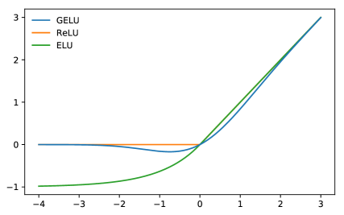

发展脉络
从 n-gram 的局部统计到反向传播和梯度优化，再到策略梯度与偏好优化，现代大模型仍建立在概率建模、微积分和数值稳定性之上。
Transformer、扩散模型再复杂，拆到底也都是三件事：线性变换、非线性激活、用 loss 倒逼参数变好。本节用最朴素的多层感知机（MLP）把这三件事讲清，并解释为什么"训练好"不等于"泛化好"、以及 Dropout、权重衰减这些正则化手段在压住什么。
一个 MLP 就是一串"线性变换 + 非线性激活"的串联。线性层把输入投影到新的表示空间，激活函数制造非线性使网络不再塌缩成一层。损失函数把输出和真实答案的差距变成一个数，反向传播再把这个数变成梯度去改参数。过拟合是网络太聪明把训练集背了下来，正则化就是在逼它别死记。
多层感知机（MLP，也叫全连接网络）是最简单的神经网络形态。一个 MLP 由若干"隐藏层"串联，每个隐藏层先做一次线性变换，再做一次非线性激活。一个隐藏层写成公式：
其中 $W$ 是权重矩阵、$b$ 是偏置、$\sigma$ 是激活函数。$Wx+b$ 是线性代数里熟悉的仿射变换（见 线性代数基础），$\sigma$ 把它弯折成非线性。多个这样的层叠在一起就是 MLP。
为什么叫"感知机"的历史名字？因为最朴素的 Rosenblatt 感知机就是单个线性加阈值单元，MLP 是它的多层、可学习版。今天大模型里 Transformer 的 FFN 子层，本质也就是一个两层 MLP——先用一个线性层把维度放大（升维），经激活，再用一个线性层缩回去（降维）。所以理解 MLP 就理解了 FFN 的一大半。
如果去掉激活函数，MLP 就退化成一串纯线性变换的复合。而线性变换的复合还是线性变换——不管叠多少层，整个网络等价于一个矩阵：深度塌缩成一层，模型表达力被打回原形。激活函数存在的根本理由就是引入非线性，让深度有意义。
历史上和今天常见的几种激活函数：
| 激活函数 | 公式 | 关键特点 |
|---|---|---|
| Sigmoid | $\frac{1}{1+e^{-x}}$ | 把任意值压到 $(0,1)$，但两侧饱和、梯度趋零，深层易梯度消失 |
| Tanh | $\tanh(x)$ | 压到 $(-1,1)$，零中心，仍会饱和 |
| ReLU | $\max(0, x)$ | 计算极简、不饱和、梯度健康，是大模型时代主力 |
| GELU / SwiGLU | — | ReLU 的平滑/门控变体，Transformer 中常用，见 前馈网络与激活函数 |
ReLU 能成为主流，原因朴素：它在正区间梯度恒为 1，反向传播时不会把梯度压没，于是缓解了深层网络的梯度消失；计算只取 max，又快又省。它的缺点是"死 ReLU"——输入恒为负的神经元梯度永远是 0，永久停摆。但这在工程上影响不大，初始化和数据分布合理时并不严重。
ReLU 之外还有一类「平滑变体」，Transformer 时代尤其常用。2016 年提出的 GELU（Gaussian Error Linear Unit，高斯误差线性单元）就把 ReLU 的硬转折改成了平滑过渡，其论文 Figure 1 把三条曲线放在一起对比，一眼就能看懂差别：

新手读这张图，抓两个区别。① 在零点的行为：ReLU 在 $x=0$ 处有一道硬折角，$x<0$ 一律输出 0；GELU 则用 $x\Phi(x)$（$\Phi$ 是标准正态分布的累积分布函数）给出平滑过渡，负区间保留一点很接近 0 的负值——梯度在零点附近是连续的，不会像 ReLU 那样在 0 处「跳变」。② 负区间的泄漏：ELU 和 GELU 都允许少量负值通过，避免「输入一旦为负，神经元就彻底失活」的硬死锁。
为什么要关心这点区别？因为平滑性和「梯度不彻底断掉」这两点，让 GELU 系激活在深层 Transformer 里训练得更稳，这也是 GPT、BERT、Llama 等模型普遍采用它的原因。注意今天的 Transformer 里更常见的是它的门控变体 SwiGLU（把 GELU 乘上一个线性门），具体见 前馈网络与激活函数。对新手而言，记住结论就够了：ReLU 是「能用且省」的基线，GELU 系是「更稳」的现代选择，两者都没有颠覆性的数学鸿沟，差别在训练稳定性的细微之处。
损失函数（loss）把模型的输出和真实答案之间的差距变成一个标量数。这个数越小越好。整个训练的目标就是"让 loss 降下来"，至于怎么降，是 反向传播 算梯度、优化器 用梯度更新参数的事。损失函数只负责把"差距"定义清楚。
两大类任务对应两大类 loss：
均方误差 $L=\frac{1}{n}\sum(y_i-\hat{y}_i)^2$，惩罚大偏差更重，适合连续值预测。
$L=-\sum y_i\log\hat{p}_i$，把预测概率和真实分布对齐。语言模型本质是多分类，用的就是交叉熵，见 概率与信息论。
选错 loss 比选错模型更致命：用 MSE 做分类，梯度在预测接近正确时反而趋零（饱和），训练会卡住；用交叉熵则梯度与误差成正比，越错越使劲。大模型几乎清一色用交叉熵，正是因为"预测下一个 token"是一个超大类别数的分类问题。
把训练集上的 loss 压到很低，并不意味着模型在没见过的数据上也好。模型可能只是把训练样本背了下来，而不是学到了背后的规律——这就是过拟合。对应地，模型在没见过的数据上表现差叫泛化不行。
过拟合的根源是模型容量相对数据量过大——参数太多、数据太少，模型就有余力去拟合训练集里的噪声。深度网络天然容量巨大，所以这个问题在大模型时代尤其突出。判别它的最朴素办法是切一个验证集，盯住验证 loss：训练 loss 一直降、验证 loss 降着降着开始反弹回升，就是过拟合的信号。
一个常被忽略的事实：大模型之所以能在大规模数据上不过拟合地训下去，靠的是数据规模远大于参数能"背"下的量；一旦数据相对参数变少，过拟合立刻抬头，这也是为什么小数据集上微调要格外小心。
正则化是所有"压住过拟合"手段的统称，它们做的事都可以概括成一句话：给模型学习添点障碍，逼它学规律而不是死记样本。几类常见手段：
| 手段 | 做法 | 在压什么 |
|---|---|---|
| 权重衰减（L2） | 把 $\lambda\|\theta\|^2$ 加进 loss | 参数别长太大，偏好更"平"的解 |
| Dropout | 训练时随机丢弃一部分神经元 | 不依赖任一神经元，逼出冗余表示 |
| 早停 | 验证 loss 反弹就停 | 在过拟合抬头前截住 |
| 数据增强 | 造等价变体喂给模型 | 让模型对无关扰动不敏感 |
Dropout 的直觉值得多讲一句：训练时随机把一部分神经元输出置零，相当于每次只用网络的一个"子网"。模型不能依赖任何单个神经元（因为它可能被丢），于是被迫学出冗余的、多路径的表示——这种冗余恰好是泛化所需要的。推理时关闭 Dropout，用完整网络。在大模型里 Dropout 仍用于嵌入层、残差路径和注意力输出，但强度通常不高。
Dropout 的实现有个关键约定：训练时丢弃，推理时关闭，且要保证两种模式下的输出尺度一致。PyTorch 的 nn.Dropout(p) 用的是 inverted dropout：训练时以概率 $p$ 把神经元置零，同时把保留的神经元乘上 $1/(1-p)$ 放大，这样推理时什么都不用做、输出尺度天然一致。听起来很简单，但手写时最容易栽的三个坑：
nn.Dropout 继续随机丢神经元——同样的输入每次输出都不一样，看起来像「模型不稳定」，其实只是 Dropout 没关。nn.Dropout(0.5) 表示丢 50%，保留 50%。有人误以为 0.5 是保留率，结果丢掉了 80% 的神经元，训练怎么都不收敛。判断口诀：训练时 Dropout 开着、每个样本用的都是随机子网；推理时它必须是个确定性的全连接。如果发现推理结果不稳定，先检查是不是忘了 model.eval()；如果训练 loss 波动异常大，再检查 p 是不是设反了。
import torch
import torch.nn as nn
class MiniMLP(nn.Module):
def __init__(self, in_dim, hid, out_dim):
super().__init__()
self.fc1 = nn.Linear(in_dim, hid)
self.fc2 = nn.Linear(hid, hid)
self.fc3 = nn.Linear(hid, out_dim)
self.act = nn.ReLU() # 非线性，没有它三层=一层
self.drop = nn.Dropout(0.1) # 正则化：训练时随机丢
def forward(self, x):
h = self.drop(self.act(self.fc1(x)))
h = self.drop(self.act(self.fc2(h)))
return self.fc3(h) # 最后一层不加激活，交给 loss 里的 softmax
model = MiniMLP(784, 256, 10)
loss_fn = nn.CrossEntropyLoss() # 多分类用交叉熵，别用 MSE注意最后一层是裸线性，没有激活也没有 softmax——因为 nn.CrossEntropyLoss 内部自带 log-softmax，外面再 softmax 等于算两次。这个细节踩过的人都知道。
网络结构搭好了，第一步要给权重赋初值。最直觉的做法是把所有 $W$ 初始化成 0——但这恰恰是训练里最经典的坑：对称权重会让同一层的神经元学到完全相同的结果。因为同一层每个神经元收到的输入一样、反向传播得到的梯度也完全一样，参数更新永远保持对称，网络实际等价于只有"半个"神经元在学。所以初始化必须打破对称。
现代做法不是从零乱试，而是让每一层输出的方差在正向传播时大致稳定，避免逐层放大或缩小。几种常见初始化策略：
| 初始化方法 | 核心思想 | 适用场景 |
|---|---|---|
| 零初始化 | 全填 0（或全相同常数） | 不可用，会陷入对称、学不动 |
| 随机小值 | 从 $\mathcal{N}(0,\sigma^2)$ 采样，$\sigma$ 很小 | 极浅网络勉强可用，深了梯度不稳 |
| Xavier / Glorot | 方差按 $\frac{2}{n_{in}+n_{out}}$ 缩放，照顾 tanh 类激活 | tanh、sigmoid 等传统激活 |
| He / Kaiming | 方差按 $\frac{2}{n_{in}}$ 缩放，照顾 ReLU 的半区特性 | ReLU 及其变体，大模型时代主流 |
一句话记住：初始化要"随机且尺度恰当"。He / Kaiming 初始化之所以成为 ReLU 网络（以及几乎所有现代深度网络）的默认，是因为它让信号方差在深层里不塌不爆，训练从第一步起就站得稳。与之配合的还有批量归一化（BatchNorm）与层归一化（LayerNorm，大模型多用后者），它们进一步把每层激活拉回稳定分布——相关内容见 归一化技术。
前面用 MLP 把"线性 + 激活"串起来，但一个完整训练迭代里数据究竟怎么流动？下面用时序图把一次迭代拆开：输入先正向穿过各层得到预测与 loss，loss 再反向流回每个参数算出梯度，最后优化器用梯度更新权重。注意反向传播和前向"共用同一张计算图"——这正是 微积分与反向传播 那节讲的机制在大模型里的落点。
既然加一层线性加激活就能逼近任意函数（通用逼近定理），为什么还要堆几十上百层？关键在于深度带来的是"可学习特征的层层抽象"，而不只是表达力。浅网络要直接用原始输入拟合目标，等于把所有难度压在最后一层；深网络则把难度分摊：前几层学边缘、纹理，中间层学部件、语义，越往后抽象级别越高。这种分层表示让每层只解决一个相对简单的问题。
下面这张概念地图把本节所有零件的关系摊开：底层是数学积木（线性变换、激活、损失），往上是组件（层、初始化、前向反向），再到能力（表示学习、泛化），最顶是目标（在没见过的数据上也准）。
模型"学不好"通常有两种不同的失败模式，对应机器学习里一对经典概念：偏差（bias）是模型假设太简单、连训练集的规律都抓不住（欠拟合）；方差（variance）是模型太灵活、把训练集噪声也当规律背下来（过拟合）。容量小的模型偏差高方差低，容量大的模型相反。
前面讲的过拟合与正则化，本质就是在偏差-方差之间找平衡点：正则化稍微抬高偏差，却显著压低方差，换来更好的泛化。这也解释了为什么大模型敢于用超大容量——它靠海量数据把方差压下去，而不是靠小容量。换句话说：决定泛化能力的不只是模型本身，更是"模型容量 × 数据量"的匹配关系。
落到工程上，这意味着"加数据"和"加正则"往往是同一件事的两面：数据不够时，与其拼命调正则，不如先想办法扩充或增强训练集；数据充足时，可以放心用更大容量而不必担心过拟合。这也是为什么同一个架构，在小数据集上要谨慎微调、在海量数据上却可以放开训练——容量够不够，永远要相对数据量来谈，不能孤立下结论。
前面讲了这么多概念，不如亲手算一遍来得踏实。下面用一个极小的两层网络，把「线性 → 激活 → 线性 → 损失」完整走一遍，所有数字都可以手算核对。这是理解后面所有内容最快的方式——数字不会说谎，算错了立刻能发现。
假设输入是一个 2 维向量 $x=(1,\,-1)$。第一层权重 $W_1=\begin{bmatrix}1&0\\0&1\end{bmatrix}$（2×2），偏置 $b_1=(0,0)$；第二层权重 $W_2=(2,\,3)$（2 维行向量），偏置 $b_2=1$。网络结构是：输入 → 线性层1 → ReLU → 线性层2 → 输出（标量），损失用平方误差，目标值取 5。
先走第一层。$W_1 x = (1\times1+0\times(-1),\;0\times1+1\times(-1))=(1,\,-1)$，加偏置仍是 $(1,\,-1)$。经过 ReLU：$\max(0,1)=1$，$\max(0,-1)=0$，得到隐藏层输出 $h=(1,\,0)$。注意那个 $-1$ 被 ReLU 压成了 0——这就是非线性的作用，它把负区间的信息「关掉」了，也让下一层的梯度没法从这条路径流过去。
再走第二层。输出 $y = W_2 h + b_2 = 2\times1 + 3\times0 + 1 = 3$。目标值是 5，平方误差 $L=(5-3)^2=4$。
现在看梯度怎么走。$\frac{dL}{dy}=2\times(5-3)=4$。反传回第二层：对 $W_2$ 的梯度是 $4\times h=(4,\,0)$；对 $b_2$ 的梯度是 4。注意 $W_2$ 的第二个分量（3）梯度是 0——因为它对应的隐藏层输出是 0，这条路径被 ReLU 掐断了。这就是「梯度不流过被抑制的神经元」的具体模样。
再反传回第一层。$\frac{dL}{dh} = \frac{dL}{dy}\times W_2 = 4\times(2,\,3)=(8,\,12)$。但经过 ReLU 反传，只有原来为正的位置能通过：第一个位置的输入是 1，梯度 8 原样通过；第二个位置的输入是 $-1$，ReLU 导数为 0，梯度 12 被变成 0。于是对 $W_1$ 第一行的梯度是 $8\times x=(8,\,-8)$，第二行全是 0。
最后做一步更新。取学习率 $\eta=0.1$，按 $\theta \leftarrow \theta - \eta\, g$：$W_2$ 从 $(2,\,3)$ 变成 $(2-0.1\times4,\;3-0.1\times0)=(1.6,\,3)$，$W_1$ 第一行从 $(1,\,0)$ 变成 $(0.2,\,0.8)$，第二行不变。再做一次前向，输出 $y$ 会从 3 往目标 5 的方向挪——这就是「一个训练步」的完整闭环。注意 $W_2$ 的第二个分量和 $W_1$ 的第二行整个没动，因为它们负责的分支被 ReLU 关死了；如果大量神经元长期如此，就是后面会遇到的「死 ReLU」问题。
把这笔账记住：一次完整的训练迭代，就是「正向算出误差，反向把误差按路径分摊给每个参数」。你刚才亲手算出的每个数，都是后面理解梯度消失、死神经元、学习率过大过小这些问题时反复要用到的地基——当有人问「为什么网络越深越难训」，答案就藏在这张摊账表里：链路上每一段都是相乘，任何一段接近 0，整条路的梯度就归零。
MLP 是最小的可学习函数，但今天的大模型显然不是单纯堆更多 MLP 层——中间隔了好几道关键的结构升级。把这四步演进记下来，以后读架构论文就不会迷路。
第一步，从「全连接」到「局部与权值共享」。图像和序列数据有一个共性：相邻位置的相关性强、远处位置的相关性弱。全连接层对每个位置都配一套权重，参数爆炸且浪费。卷积（CNN）用同一个卷积核扫过所有位置，参数从「序列长度 × 宽度」量级降到「核大小」量级——这是第一次结构瘦身。它的思想今天依然活在 Transformer 的局部注意力变体里。
第二步，引入「记忆」，解决变长序列。RNN 按时间步逐步读入序列，把历史压缩成隐状态。它解决了变长输入的问题，但串行计算慢、长距离信息衰减，于是有了 LSTM 的门控改进。这条路线最终被 Transformer 取代，但「按顺序处理序列」的建模思路被继承了下来，RNN 的变体（如 Mamba 这类状态空间模型）近年又以新的形式回归。
第三步，让「任何位置直接对话」。Transformer 的自注意力让序列中任意两个 token 直接交互，距离变成一步，并行度拉满。架构上它保留了 MLP 作为每个位置的「特征加工厂」（也就是 FFN），把注意力当作「信息交换层」：注意力负责把信息从远处搬过来，FFN 负责就地加工。两者分工，这是理解 Transformer 最关键的一句话。
第四步，把「交换」与「加工」堆叠成深塔。一个 Transformer 块等于「自注意力 + 前馈网络 + 残差连接 + 归一化」。残差连接让梯度能跨层直通，缓解深层的梯度消失；归一化把每层激活拉回稳定分布。这两者是让「堆到几十层、上千亿参数」在工程上成为可能的隐形功臣——没有它们，前两步带来的深度优势根本落不了地。
这条路线图最大的启示是：大模型并不神秘，它只是「先用注意力解决信息搬运，再用 MLP 做特征变换，最后用残差和归一化保证能堆深」的组合。理解了 MLP，再往上看每一步升级都是在改「信息怎么流动」，而不是发明全新的数学——这也解释了为什么本页这些最基础的概念，能直接移植到 Transformer 时代继续用。
落到学习顺序上，一个建议是：先把本页的 MLP 在纸上手算通，再去读 注意力机制。因为注意力层也可以理解成一个「按相关性加权的全连接层」——它做的仍然是「线性变换 + 非线性」，只是权重不是固定学出来的矩阵，而是由输入内容实时算出来的。掌握了 MLP 的零件，Transformer 就只是换了信息流动的规则，而不是换了整套工程。这层「零件通用、装配不同」的视角，正是通读整本手册时最值得带在身上的框架。
本章把阅读大模型论文所需的数学和学习理论补齐：向量与矩阵、梯度和链式法则、优化器，以及强化学习的基本对象。
阅读提示：不要只记优化器名称；要能解释梯度从哪里来、参数为什么更新、以及奖励信号为何可能不稳定。
覆盖线性代数、概率、数值计算、神经网络和优化，是本章公式的长期参考书。
用计算图和局部梯度解释反向传播，并把学习率、动量和二阶信息的作用讲清楚。
将链式法则映射到真实张量代码，适合验证页面中的梯度推导和排查训练实现。
Adam 和 AdamW 的共同起点。阅读时关注一阶、二阶矩估计和偏置修正，而不是只背默认超参数。
MDP、价值函数、策略梯度和时序差分学习的经典教材，为 RLHF、GRPO 和 Agentic RL 铺垫。
资料优先选用原始论文、官方文档、大学课程和公共机构材料；链接按 2026-08-10 检索，具体版本以来源页面为准。
从 n-gram 的局部统计到反向传播和梯度优化，再到策略梯度与偏好优化，现代大模型仍建立在概率建模、微积分和数值稳定性之上。
阅读公式时固定追踪张量形状、随机变量、目标函数和梯度估计的来源；任何优化器都应回到“估计什么、更新什么、误差如何传播”。
更大的 batch、学习率或模型并不自动带来更好结果；梯度噪声、条件数、正则化和数据分布会改变稳定区间。
Muon、分层学习率、混合精度和 RLVR 等新方法都在重新讨论优化信号的质量与成本，结论必须结合任务和规模验证。
能从线性层、非线性、损失和正则化四部分解释 MLP 为什么能拟合非线性关系，以及训练好为何不等于泛化好。
先修高中代数与函数；遇到公式时回到本篇的线性代数、概率和梯度页面核对符号。
用 PyTorch 训练一个 2-8-1 MLP 拟合 XOR，比较无激活、ReLU 和 tanh；再加入 20% 标签噪声，对比无正则与 weight decay 的训练/验证曲线。
固定种子后，带非线性的模型在无噪声 XOR 上 4/4 正确，无激活模型不能达到同等结果；报告过拟合间隙及正则化对它的影响。